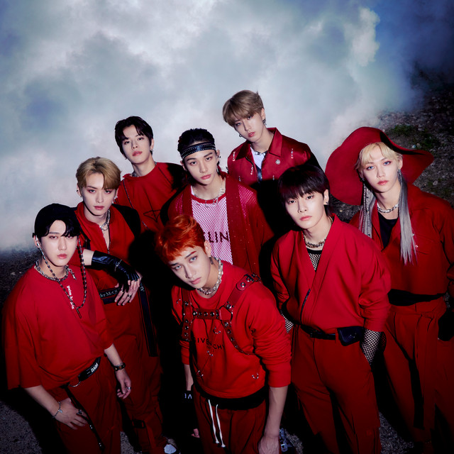
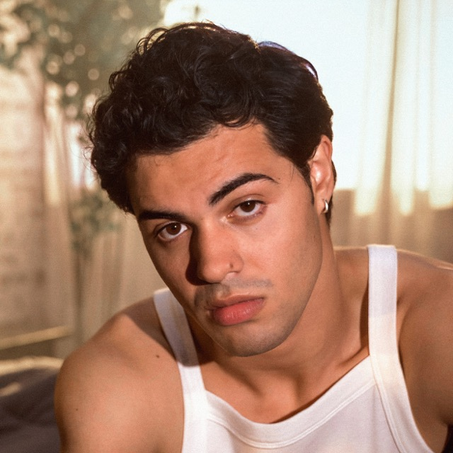

Active signals93 added in the last 48h
High confidence6Evidence across 3+ sources
Pending approval3Recommendation not yet approved
Median velocity+253%Compared with baseline
Priority queue
Pending review
Sorted by signal strength, audience specificity, and time sensitivity.
Artist / campaignPatternAudience liftStatusDecision

KenTheManOMG · release momentum
Walk-in confidence286 matches · 48h
+253%Houston + Atlanta · 18–24
High confidenceReview →

Stray KidsTHIS & THAT · release campaign
Why choose one?473 matches · 48h
+311%Indonesia + Mexico · 13–24
High confidenceReview →

MerguiAlien · growth campaign
Beautifully out of place139 matches · 48h
+171%United States + Germany · 18–24
Watch closelyReview signal →